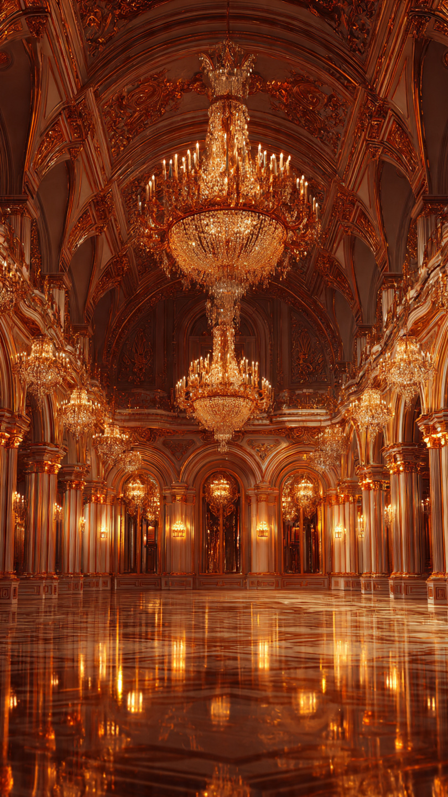
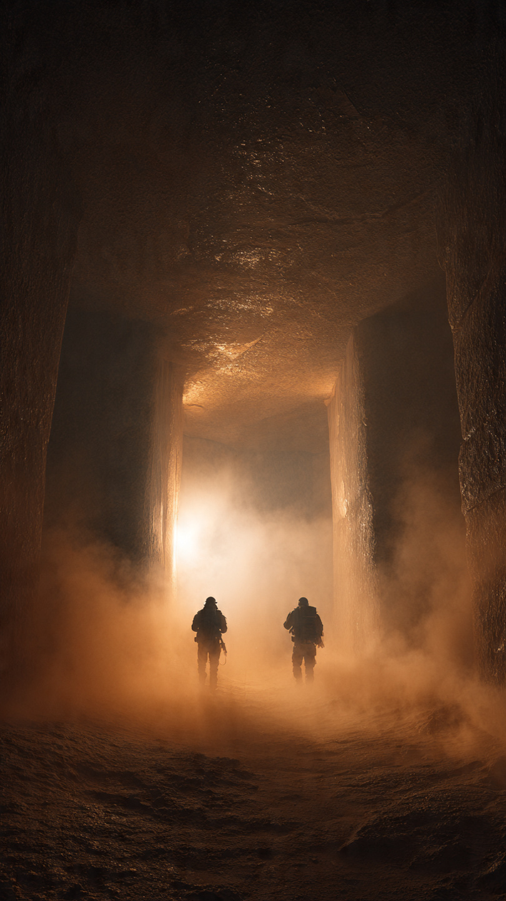

```html id="w2h7lm"
الكنز الذي يبحث عنه الناس منذ مئات السنين | قصص تاريخية
```
على مر العصور، حلم البشر بالعثور على كنوز مخبأة تغيّر حياتهم إلى الأبد.
لكن بين جميع قصص الكنوز المفقودة، تبرز حكاية واحدة ما زالت تشغل المستكشفين والباحثين حتى اليوم.
إنها قصة غرفة العنبر، التي يصفها كثيرون بأنها "أعظم كنز مفقود في العالم".
بدأت القصة في أوائل القرن الثامن عشر، عندما صُنعت غرفة فريدة داخل أحد القصور الملكية في بروسيا.
لم تكن جدرانها مغطاة بالطلاء أو الرخام.
بل بألواح من العنبر الطبيعي، وهو راتنج متحجر يتميز بلونه الذهبي وقدرته على عكس الضوء بطريقة مبهرة.
وزُينت الغرفة أيضًا بالمرايا، والذهب، والفسيفساء، حتى بدت وكأنها تلمع بالكامل.
ولهذا أطلق عليها الناس اسم "غرفة العنبر".
وفي عام 1716، قُدمت الغرفة هدية إلى القيصر الروسي بطرس الأكبر، في إطار توطيد العلاقات بين بروسيا وروسيا.
ونُقلت لاحقًا إلى قصر كاترين بالقرب من مدينة سانت بطرسبرغ، حيث أصبحت واحدة من أشهر التحف الفنية في أوروبا.
وكان الزوار يأتون من أماكن بعيدة لمشاهدة جمالها الفريد.
لكن مع اندلاع الحرب العالمية الثانية، تغير كل شيء.
ففي عام 1941، احتلت القوات الألمانية المنطقة التي كان يوجد فيها القصر.
وقامت بتفكيك ألواح العنبر بعناية، ثم نقلتها إلى مدينة كونيغسبرغ (كالينينغراد حاليًا)، حيث عُرضت لفترة داخل أحد المتاحف.
وبعد ذلك...
اختفت الغرفة تمامًا.
ومنذ تلك اللحظة، بدأ واحد من أعظم ألغاز التاريخ.
لكن...
أين ذهبت غرفة العنبر؟
وهل دُمرت أثناء الحرب، أم ما زالت مخبأة في مكان مجهول؟
هذا ما سنعرفه في الجزء الثاني.
📷 الصورة رقم 1

بعد اختفاء غرفة العنبر في السنوات الأخيرة من الحرب العالمية الثانية، بدأت تظهر عشرات الروايات حول مصيرها.
فبعض الشهود قالوا إنها دُمِّرت عندما تعرضت مدينة كونيغسبرغ للقصف.
بينما اعتقد آخرون أن القوات الألمانية أخفتها داخل منجم مهجور أو نفق سري قبل نهاية الحرب.
لكن حتى اليوم، لم تظهر أدلة قاطعة تؤكد أيًا من هذه الروايات.
ولهذا بدأت عمليات البحث منذ نهاية الحرب.
فقد فتشت فرق متخصصة القلاع القديمة، والأنفاق، والمناجم، وحتى حطام بعض السفن التي غرقت في بحر البلطيق.
وكان كل اكتشاف جديد يثير الأمل في العثور على الكنز المفقود.
لكن معظم هذه المحاولات انتهى دون العثور على الغرفة الأصلية.
ومع مرور السنين، تحولت غرفة العنبر إلى واحدة من أشهر الكنوز المفقودة في العالم.
وأصبحت موضوعًا لكتب وأفلام وثائقية ورحلات استكشافية عديدة.
ورغم كثرة الادعاءات، لم يتمكن أحد من تقديم دليل مؤكد على مكانها الحقيقي.
ولهذا لا يزال الغموض يحيط بها حتى اليوم.
وفي الوقت نفسه، قررت روسيا إعادة بناء الغرفة اعتمادًا على الصور والوثائق التاريخية.
واستغرق المشروع سنوات طويلة من العمل الدقيق.
وفي عام 2003، افتُتحت النسخة الجديدة داخل قصر كاترين، لتمنح الزوار فرصة رؤية هذا العمل الفني المذهل، حتى وإن كانت الغرفة الأصلية لا تزال مفقودة.
لكن...
هل يمكن أن تظهر غرفة العنبر الأصلية في المستقبل؟
ولماذا ما زال الباحثون يواصلون البحث عنها حتى الآن؟
هذا ما سنعرفه في الجزء الثالث والأخير.
📷 الصورة رقم 2

حتى اليوم، لا يعرف أحد على وجه اليقين أين انتهت غرفة العنبر الأصلية.
فقد مرت أكثر من ثمانية عقود على اختفائها، وما زالت جميع النظريات تفتقر إلى دليل حاسم.
ويرى بعض الباحثين أنها ربما دُمِّرت بالكامل خلال القصف الذي تعرضت له مدينة كونيغسبرغ في نهاية الحرب العالمية الثانية.
بينما يعتقد آخرون أنها قد تكون ما زالت مخبأة في مكان لم يُكتشف بعد، مثل منجم قديم أو نفق أو مخزن سري.
لكن هذه الفرضيات لم تثبت حتى الآن.
ورغم ذلك، لم تتوقف عمليات البحث.
فكلما ظهرت وثيقة جديدة أو شهادة غير معروفة، تعود فرق البحث إلى دراسة المواقع المحتملة.
كما يستخدم الباحثون اليوم تقنيات حديثة، مثل أجهزة المسح الجيولوجي والرادار المخترق للأرض، في محاولة للعثور على أي أثر يقود إلى الغرفة الأصلية.
ومع ذلك، لم تحقق هذه الجهود اكتشافًا مؤكدًا حتى الآن.
وأصبحت قصة غرفة العنبر مثالًا على أن بعض الكنوز تكتسب قيمتها من الغموض الذي يحيط بها بقدر ما تكتسبه من قيمتها المادية.
فحتى لو لم يُعثر عليها أبدًا، فإنها ستظل واحدة من أشهر الأعمال الفنية المفقودة في التاريخ، ورمزًا للأسرار التي خلفتها الحروب.
أما النسخة المعاد بناؤها في قصر كاترين، فهي تتيح للزوار تخيل روعة الغرفة الأصلية التي أبهرت أوروبا في القرن الثامن عشر.
وهكذا تبقى غرفة العنبر واحدة من أعظم الألغاز التاريخية.
كنز اختفى وسط أهوال الحرب، وما زال ينتظر من يكشف مصيره الحقيقي.
وربما يحمل المستقبل اكتشافًا جديدًا يعيد أحد أشهر الكنوز المفقودة إلى صفحات التاريخ من جديد.
💎🏛️ انتهت القصة 🏛️💎